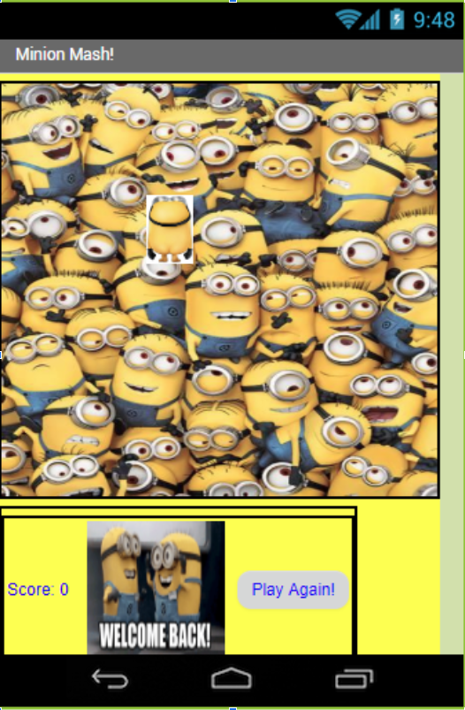

<!doctype html>
	<html lang="en">
	  <!DOCTYPE html>
	 
	 
	     <style>
      
      body{
        text-align:center;
      }  
    
    </style>
	 
	  
	  
	  
	  
	  
	  
	  
	  
	  
	  
	  
	  
	  
	  


<style type="text/css">
BODY {overflow-x: hidden;}
</style>


<script language="JavaScript1.2">
<!--

/*
Submitted by Marcin Wojtowicz [one_spook@hotmail.com] 
Featured on JavaScript Kit (http://javascriptkit.com)
Modified by JK to be IE7+/ Firefox compatible
For this and over 400+ free scripts, visit http://javascriptkit.com
*/

var trailLength = 800 // The length of trail (8 by default; put more for longer "tail")
var path = "images/.jpeg" // URL of your image

var standardbody=(document.compatMode=="CSS1Compat")? document.documentElement : document.body //create reference to common "body" across doctypes
var i,d = 0

function initTrail() { // prepares the script
	images = new Array() // prepare the image array
	for (i = 0; i < parseInt(trailLength); i++) {
		images[i] = new Image()
		images[i].src = path
	}
	storage = new Array() // prepare the storage for the coordinates
	for (i = 0; i < images.length*3; i++) {
		storage[i] = 0
	}
	for (i = 0; i < images.length; i++) { // make divs for IE and layers for Navigator
		document.write('<div id="obj' + i + '" style="position: absolute; z-Index: 100; height: 0; width: 0"></div>')
	}
	trail()
}
function trail() { // trailing function
	for (i = 0; i < images.length; i++) { // for every div/layer
		document.getElementById("obj" + i).style.top = storage[d]+'px' // the Y-coordinate
		document.getElementById("obj" + i).style.left = + storage[d+1]+'px' // the X-coordinate
		d = d+2
	}
	for (i = storage.length; i >= 2; i--) { // save the coordinate for the div/layer that's behind
		storage[i] = storage[i-2]
	}
	d = 0 // reset for future use
	var timer = setTimeout("trail()",10) // call recursively 
}
function processEvent(e) { // catches and processes the mousemove event 
	if (window.event) { // for IE
		storage[0] = window.event.y+standardbody.scrollTop+10
		storage[1] = window.event.x+standardbody.scrollLeft+10
	} else {
		storage[0] = e.pageY+12
		storage[1] = e.pageX+12
	}
}

	initTrail() 
	document.onmousemove = processEvent // start capturing
//-->
</script>
</html>

	  
	  
	  
	  
	  
	  
	  
	  
	  
	  
	  
	  
	  
	  
	  
	  


<style>
body, html {
  height: 100%;
}

.bg { 
  /* The image used */
  background-image: url("images/fneen.PNG");

  /* Full height */
  height: 100%; 

  /* Center and scale the image nicely */
  background-position: center;
  background-repeat: no-repeat;
  background-size: cover;
}
</style>


<h1>Me llamo Namii </h1>
<p>Welcome to mi site.</p>

</body>
</html>
	  <head>
	    <meta charset="utf-8">
	    <title>Portfolio</title>
	  </head>
	  <body>
    <a href="index.html">La Casa</a>
    <a href="portfolio.html">Portfolio</a>
    <a href="about_me.html">Sobre Mí</a>
    <h1>Esta es mi página de portfolio!</h1>
    
    <br>
    <a target="_blank" href="https://scratch.mit.edu">
      
    </a>
	  </body>
	</html>
	<p>I am the best game designer to ever step on the Rancho Bernardo campus.
	<br>
	<br>
I have decided to skip college and get straight to work as the CEO oF Google.</p>
<br>
	<br>
The following game was the inspiration fo all of the parking games on the internert.

<br>
	The inspiration was driven from seeing how inconsiderate ppl driv in the student lot.
<br>
 You must pilot a 'Yota Camry round the hardest course of all time to park.	
	
	
</a>
    <p></p>
    <iframe allowtransparency="true" width="485" height="402" src="//scratch.mit.edu/projects/embed/286690622/?autostart=false" frameborder="0" allowfullscreen></iframe>

	  
	<br>
	<br>
	<br>
	<br>
	 
The next game is made on MIT App Inventor. It utilizes the touch and vibrate functions of the tablet. The object of the game is to 	 
	 
	 
	<br>
	<br>
	<br>
	<br>
	 
	 
	 
	   
	  
<p>  
	  
This following game is an interactive fiction story about overcoming the monster. You are a minion whose plane got shot down. You must find a way to avenge your dead minions, and kill the snake that killed your kind.	  
	  
	<br>
	<br>
	<br>
	<br>  
	  
	  <br><iframe height="400px" width="100%" src="https://repl.it/@robyny44782/Minion?lite=true" scrolling="no" frameborder="no" allowtransparency="true" allowfullscreen="true" sandbox="allow-forms allow-pointer-lock allow-popups allow-same-origin allow-scripts allow-modals"></iframe>
	  
	 </p>	 
	  
	    </body>
	  
	  
<p>I created a quiz about Mr. Dunlea, AP Computer Science the class, and bih as minions. I did all the coding in Canopy and transfered it to repl.it just so I could embed the final product into my website.</p>
<br>
	  <iframe height="400px" width="100%" src="https://repl.it/@ndog_6699/benis?lite=true" scrolling="no" frameborder="no" allowtransparency="true" allowfullscreen="true" sandbox="allow-forms allow-pointer-lock allow-popups allow-same-origin allow-scripts allow-modals"></iframe><iframe height="400px" width="100%" src="https://repl.it/@ndog_6699/benis?lite=true" scrolling="no" frameborder="no" allowtransparency="true" allowfullscreen="true" sandbox="allow-forms allow-pointer-lock allow-popups allow-same-origin allow-scripts allow-modals"></iframe>
	  	  
	  
	  	  
	<br>
	<br>
	<br>
	<br>
	  
	  
	  
	 	  
<p>I created a image abstraction of drake makin a funny.</p> 
	  
	  
	  
	  	  
	<br>
	<br>
	<br>
	<br>
	  
	  
	  
	  
	      
	  
	  
	  	  
	<br>
	<br>
	<br>
	<br>
	  
	  
	  
	</html>